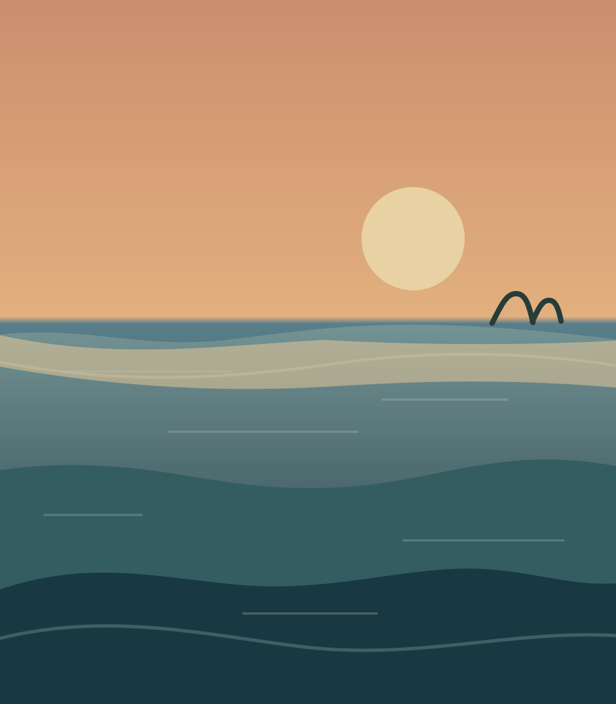

PERSONAL PORTFOLIOSEOUL, KR
Looking closer.
Seeing differently.
A visual journal of quiet places, changing light, and the small details that make a moment stay.
Explore selected frames01 — 03FIELD NOTES

36° 21′ NCOAST STUDY · 01
Somewhere between the last lightand the walk back.
COLLECTED MOMENTS / VOL. 01
01 / THE ARCHIVE
Selected frames
Small studies of a place, kept
for the way the light felt.
✳ Illustrated sample frames are standing in for the original photos. Replace the files in assets/ with your own images.
02 / BEHIND THE ORDER
A little order,
by design.
Both controls above use merge sort. It splits the frames into smaller groups, sorts each group, then merges them back in order.
TIMEO(n log n)SPACEO(n)
THE SORTING FUNCTIONJAVASCRIPT
function mergeSort(items, compare) {
if (items.length <= 1) return items;
const middle = Math.floor(items.length / 2);
const left = mergeSort(items.slice(0, middle), compare);
const right = mergeSort(items.slice(middle), compare);
return merge(left, right, compare);
} Recursive divide & conquerUSED BY BOTH SORT BUTTONS
THE SAME FRAMES, A DIFFERENT WAY THROUGH.LESS NOISE. MORE TO NOTICE.
03 / A NOTE
The best details
rarely ask for attention.
This is a place to collect what catches the eye: a familiar street after rain, a view found by taking the longer way, the color of the sky just before it changes.
Made with curiosity, a camera, and a little code.
Back to the beginningJUNHO · VISUAL JOURNALBUILT WITH HTML, CSS & MERGE SORT